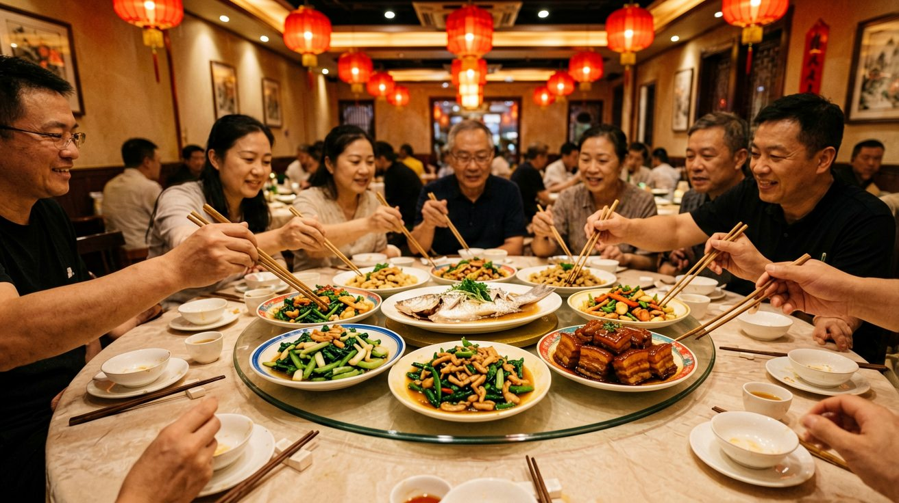
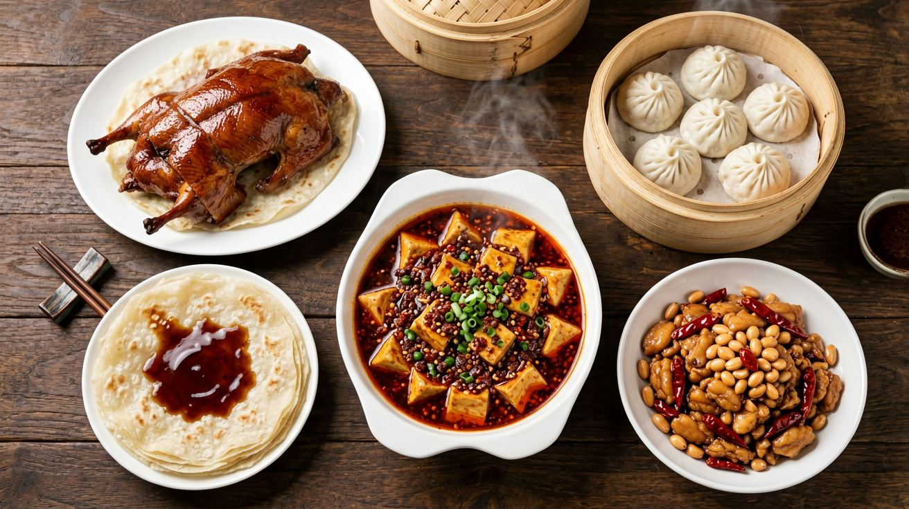
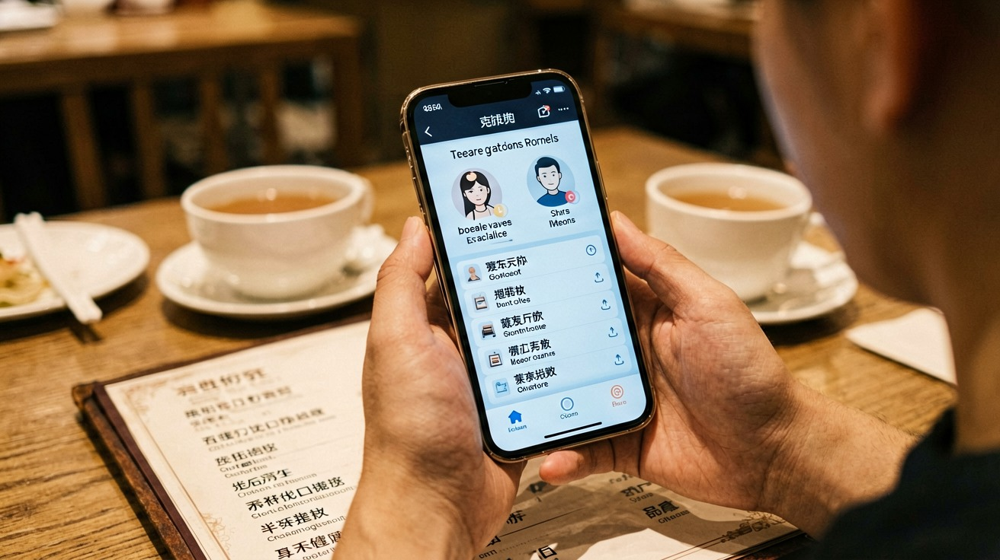
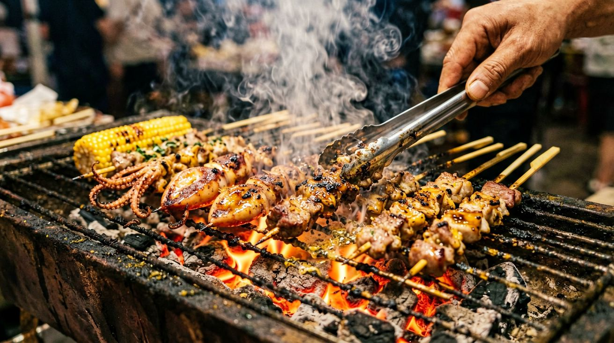
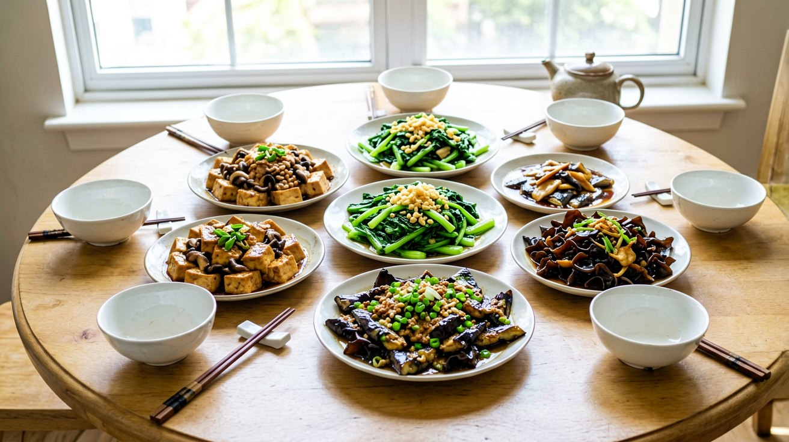

Last updated: June 2026.
Eating in China for the first time can feel overwhelming. The menus are long, the flavors are unfamiliar, and the dining customs are different from what you may be used to. But getting comfortable with Chinese food is also one of the most rewarding parts of traveling here. Meals are shared, dishes keep coming until the table is full, and the sheer variety — from delicate steamed fish to fiery Sichuan hot pot — means there is something for every palate. This guide covers what you need to know to eat well in China: how meals work, which dishes to try first, how to order without reading Chinese, and how to navigate street food and dietary restrictions with confidence.

If you come from a culture where everyone orders their own plate, Chinese dining will feel like a different world. Meals here are communal. A group of people shares a collection of dishes placed in the center of the table, often on a rotating glass tray called a lazy Susan. Everyone takes small portions from the shared plates and eats them with their own bowl of rice. The logic is simple: sharing means you get to taste more things.
A typical meal in a Chinese restaurant follows a loose structure. Cold appetizers come first — sliced beef, pickled vegetables, marinated tofu. Then the hot dishes arrive, usually one after another rather than all at once. Meat, seafood, and vegetable dishes come in no fixed order, though a whole fish often appears near the end as a sign of abundance. Soup is typically served last, not first. Rice or noodles are the foundation — you order them alongside the dishes and they arrive throughout the meal. At the end, fresh fruit may appear as a complimentary dessert.
Do not be surprised if the person hosting the meal orders far more food than the group can finish. An overflowing table is a gesture of generosity and hospitality. If you are dining alone or as a couple, order two or three dishes plus rice — that is usually enough. Portions in Chinese restaurants are designed for sharing, and a single dish of mapo tofu or kung pao chicken can easily feed two people when paired with rice.
Chopsticks are the default utensil. If you are not confident with them, that is fine — most restaurants will provide a fork if you ask. But a few basic rules are worth knowing: do not stick chopsticks upright in a bowl of rice (this resembles funeral incense), do not use them to point at people, and when taking food from a shared plate, use the serving spoon or the blunt end of your chopsticks rather than the end that goes in your mouth.

Chinese cuisine is so vast that no single list can do it justice. But if you are eating in China for the first time, these dishes are the ones you will encounter most often — and the ones most likely to win you over.
Peking duck. Crispy skin, tender meat, thin pancakes, hoisin sauce, cucumber, and spring onion. The duck is carved tableside in many Beijing restaurants, and the skin is the prized part — glossy and crackling. Roll a few slices into a pancake with the accompaniments and eat it in two bites. Beijing is the place to have it, but good versions exist in most large Chinese cities.
Xiaolongbao (soup dumplings). These are the delicate, pleated dumplings from Shanghai and the Jiangnan region, filled with pork and a spoonful of hot broth. The broth is made by mixing aspic (gelatinized stock) into the filling; it melts during steaming. The technique: pick up a dumpling with your chopsticks, place it on your spoon, nibble a small hole in the skin, sip the soup, then eat the rest. Blowing on it does not help — the soup is trapped inside and will burn your mouth if you bite straight in.
Kung pao chicken. Diced chicken stir-fried with peanuts, dried chilies, and Sichuan peppercorns in a sweet-savory sauce. It originated in Sichuan but has become one of the most popular dishes across China and abroad. The version you find in China is less sweet and more numbing than Westernized versions, thanks to the Sichuan peppercorns that produce a tingling, almost electric sensation on the tongue.
Mapo tofu. Soft cubes of tofu in a fiery red sauce of chili bean paste, fermented black beans, minced pork, and — crucially — Sichuan peppercorns. It is the dish that best represents Sichuan cuisine: bold, numbing, deeply savory, and deceptively simple-looking. Order it with a bowl of plain white rice to cut the heat.
Dumplings (jiaozi). Boiled, steamed, or pan-fried, filled with pork and cabbage, lamb and carrot, shrimp and chive, or countless other combinations. In northern China, dumplings are a meal in themselves. In the northeast, they are eaten with black vinegar and chili oil. The best dumplings are often found in small, unassuming shops where you can watch the cooks fold them by hand in the window.
Hot pot. A bubbling pot of broth in the center of the table, surrounded by plates of raw ingredients — thinly sliced beef and lamb, leafy greens, mushrooms, tofu, noodles. You cook each piece yourself by swishing it through the broth, then dip it in a sauce you mix at the condiment station. Hot pot is a social meal, best enjoyed with a group, and it is popular everywhere from Chengdu to Beijing to Shanghai. The Sichuan version, with its split pot of spicy chili broth and mild bone broth, is the most famous.

Not being able to read a Chinese menu is the single biggest barrier to eating well in China. But there are several ways around it, and none of them require learning characters.
Picture menus are your best friend. Many mid-range restaurants, especially in areas with a lot of visitors, have menus with photographs of every dish. Even if the text is entirely in Chinese, you can point to what looks good. Some restaurants display their dishes as plastic models in a window or near the entrance — point at what you want and hold up fingers for the quantity.
Use a translation app. The camera translation feature in apps like Google Translate, Baidu Translate, or the photo-translate tool built into Alipay lets you point your phone at a menu and see the English translation overlaid on the screen. It is not perfect — poetic dish names like "Ants Climbing a Tree" (which is actually glass noodles with minced pork) can produce confusing results — but for most standard dishes it works well enough. Download the Chinese language pack in your translation app before you travel so it works offline.
Use Dianping to find restaurants and browse photos. Dianping is China's most popular restaurant review app. The interface is entirely in Chinese, but you can open it inside Alipay as a mini-program and use the photo galleries to see what each restaurant serves. The user-uploaded photos are often more informative than the menu itself. Look at what other diners have ordered, screenshot the dishes you want, and show the screenshots to the server.
Learn a few key phrases — or just point. "Zhe ge" (this one) while pointing at a menu picture or a dish on a neighboring table works surprisingly well. If you have dietary restrictions, learn to say them: "bu yao la" (no spicy), "wo chi su" (I eat vegetarian), or better yet, save them as text on your phone to show the server. Most restaurant staff in big cities are used to non-Chinese-speaking customers and will find a way to communicate.

Some of the best food in China is not served in restaurants. It is cooked on carts, grills, and portable woks on street corners and in night markets. Street food is fast, cheap, and often the most authentic way to taste a city's flavors.
Skewers (chuan'r). In the north, especially Beijing and Xi'an, streetside grills turn out lamb skewers seasoned with cumin, chili, and salt. You order by the stick — five or ten at a time — and eat them standing by the grill. In Xi'an's Muslim Quarter, beef and lamb skewers are the defining street snack.
Jianbing. A savory crepe made from mung bean and wheat batter, spread on a hot griddle, cracked with an egg, and folded around a crispy fried cracker, hoisin sauce, chili paste, and scallions. It is the classic Chinese breakfast street food, found on morning corners in cities across the country. Watch it being made: the batter is spread in a perfect circle with a wooden paddle in about three seconds.
Stinky tofu. Fermented tofu deep-fried until crispy and served with chili sauce. The smell is notorious — it can be detected from half a block away — but the taste is milder than the aroma suggests. Changsha in Hunan province is the spiritual home of stinky tofu, but you will find it in night markets everywhere. Try it at least once.
Shengjianbao. Shanghai's pan-fried pork buns: larger and doughier than xiaolongbao, with a crispy golden bottom and hot broth inside. Yang's Fry Dumplings, a local chain, is the go-to spot for first-timers. Eat them carefully — the broth is scalding.
When eating street food, follow the same rule you would anywhere: eat where the locals eat. A long queue at a stall is a reliable signal of quality and turnover. Avoid pre-cooked food that has been sitting out, and stick to stalls where you can see the cooking happening in front of you. Bottled water or canned drinks are safer than tap water.

Vegetarian and vegan. Chinese Buddhist cuisine has a centuries-old tradition of meat-free cooking, and temple restaurants serve elaborate vegetarian meals where tofu and mushrooms are prepared to mimic meat textures. In regular restaurants, however, the concept of vegetarianism is not widely understood. Dishes described as vegetable-based may still contain small amounts of minced pork (used as a flavoring) or be cooked in animal fat. The safest approach is to eat at dedicated vegetarian restaurants — search for "su shi" (素食) on Dianping maps — or to use a translation card that explains your restrictions clearly in Chinese characters.
Gluten-free. This is a genuine challenge in China. Soy sauce, which contains wheat, is the default seasoning in most savory dishes. Wheat noodles, dumpling wrappers, and steamed buns are staples. Rice-based dishes are naturally gluten-free, and some southern Chinese cuisines rely more on rice noodles. In larger cities, a handful of health-conscious cafés now offer gluten-free options, but they are the exception rather than the rule. If you have celiac disease, prepare a detailed Chinese-language explanation card and consider booking accommodation with a kitchen.
Spice tolerance. Not all Chinese food is spicy. The famously fiery dishes come mainly from Sichuan, Hunan, and Guizhou provinces. If you are in Beijing, Shanghai, or Guangzhou, you can easily avoid chili heat entirely. If you do find yourself in Chengdu or Chongqing and want less heat, the phrase "wei la" (slightly spicy) will only get you so far — the baseline in these cities is higher than in most of the world. Your best strategy is to order a mix of spicy and mild dishes so you can alternate.
Paying the bill. In almost all Chinese restaurants, you pay by scanning a QR code on the table with Alipay or WeChat Pay. The bill appears on your phone, and you pay with a tap. Cash is accepted but increasingly rare — some smaller restaurants no longer keep change. If you have set up Alipay with your international card (see the payment guide on this site), paying is seamless. Tipping does not exist in China. Do not leave money on the table — it will be returned to you.
A final word on water. Tap water in China is not safe to drink without boiling. Restaurants serve hot tea or boiled water by default, and bottled water is available everywhere. Street food stalls sell bottled drinks alongside their food. When in doubt, stick to bottled, boiled, or canned beverages.
Chinese food is one of the richest culinary traditions in the world, and eating well here does not require a guidebook for every meal. Start with the dishes on this list, learn to use a translation app confidently, follow the crowds to the busy stalls, and let the communal rhythm of shared plates carry the meal. The food will do the rest.
This article is based on information as of June 2026.
Sources
Restaurant availability, menu items, and prices may vary. Verify details at your destination.